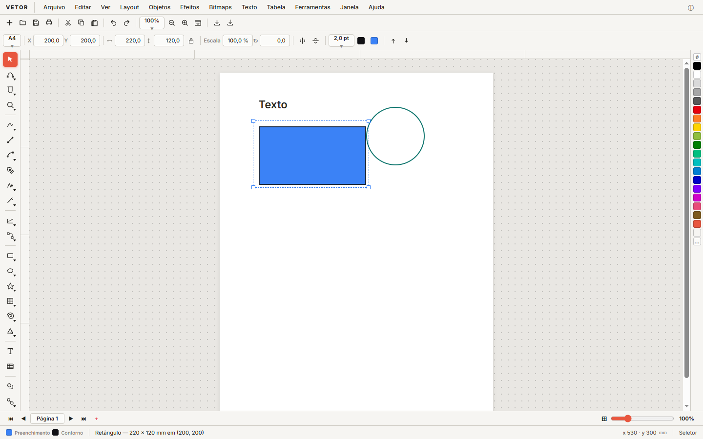
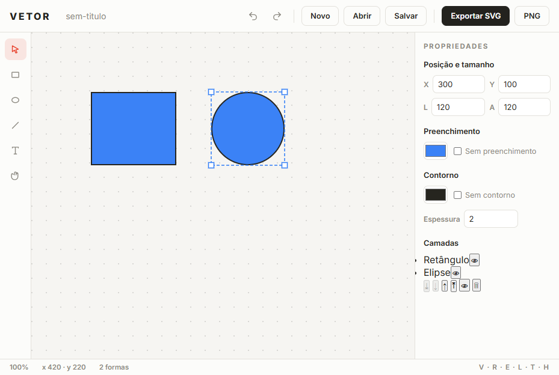
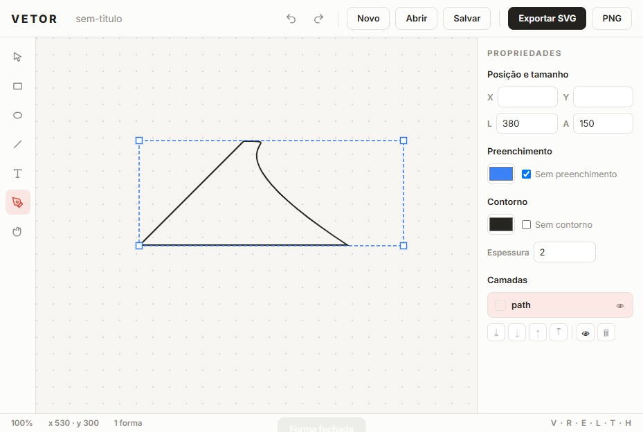

Formas & Texto
Retângulo, elipse e linha com preenchimento e contorno configuráveis; texto editável pelo painel.
As ferramentas de desenho vetorial que você espera — pen, formas, camadas e atalhos — direto no navegador. Sem instalar nada. Open source e grátis para sempre.
Sem conta · Sem telemetria · Interface em português



Retângulo, elipse e linha com preenchimento e contorno configuráveis; texto editável pelo painel.
Cliques adicionam nós; arraste puxa a tangente com reflexo no próximo nó — curvas suaves de verdade.
Lista de objetos com renomear (duplo clique), ocultar/mostrar e reordenar em 4 direções.
Roda do mouse ancorada no cursor; mover a tela com a ferramenta mão ou botão do meio.
Ctrl+Z / Ctrl+Y com até 60 passos — desfaça qualquer gesto, incluindo criação e camadas.
SVG nativo (vetores de verdade) e PNG 1600×1200 em um clique. Salva e reabre o projeto em .json.
Curtiu? Reporta bug, pede feature e contribui — o projeto precisa de gente de código, teste, design e ideia.